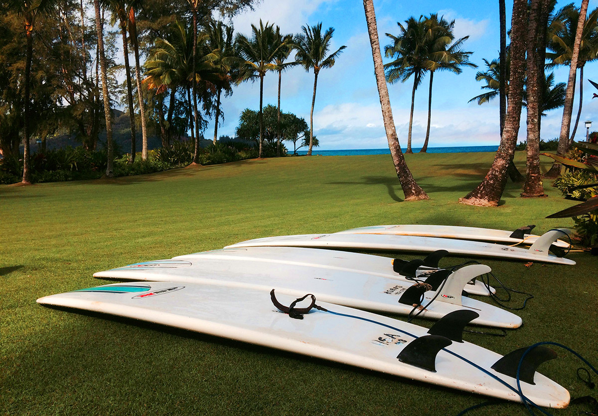

Winter Break Of Code Day Eighteen

Late this afternoon I took a break from working to surf. The sun was setting and a cool breeze was picking up as grey clouds billowed behind the mountains along Hanalei Bay. I had spent most of the day wrangling content, markup, and CSS, and the Pacific was calling. There was still plenty of work to be done, but balance is important, and my mind needed to reset. Surfing would be today’s lesson.
“The secret of getting ahead is getting started. The secret of getting started is breaking your complex overwhelming tasks into small manageable tasks, and starting on the first one.”
– Mark Twain
Paddling out starts with easy work. Your muscles are fresh, you’re excited to get started, and the sandy bottom lies just below a few feet of clear ocean water. The white wash is gentle and approaches slowly, predictably. You catch glimpses of the break and you get the first rush of adrenaline. If you can get out past the crashing waves, you’ll be rewarded with a chance to rest, a breathtaking view, and a chance at the ride of your life.
Somewhere in the middle of your trip, things get rough. The wash gets bigger, and with each passing wave you wonder if you’re making progress at all. You cling to your board and you’re pulled back, forcing yourself to keep paddling. At some point, a slightly embarrassing thought arises; why did I think this was going to be easy?
Your heart rate rises, you swallow water. Your arms start burning and the rough, wax-covered board gnaws at your chest. For many people, this part of the experience teaches them to stay away the next time. If you stay on the shore, you stay dry, your skin never gets raw, you never go under. It feels endless, and as you stare down an unthinking, unfeeling mass of natural energy, you are faced with the choice of turning back. The board is no longer a life raft but a drag net, stunting your progress and testing your stamina.
Inevitably, a set comes in. You can expect two or three waves to crash dramatically in front of you, throwing water up in an intimidating show of force that never fails to follow through on its promise. Dive under, roll over, but either way, the only way is forward – it’s too late to go back. Exhaustion makes way for your true enemy – fear. As you tense for each impact, your body reminds you that you were safe with your toes in the sand.
Finally, you’re close enough to see the walls rising in front of you. Your energy returns, if only out of necessity and the adrenaline now pumping. In one sweet moment, you’re close enough to beat it to the punch – to tuck through the tiny upper lip and let it crash behind you – and you’re beyond the break.
I won’t bother describing the payoff, as it’s one you’ll need to discover for yourself, but the sense of accomplishment alone might be enough. You can be certain, though, that once you commit to a wave, ride the ocean’s endless energy towards the shore, and collapse victorious into the shallows, you’ll remember why you made the effort. Like anything in life, the more you do it, the easier it gets.
Find something that drives you, stop worrying about staying dry, and paddle out.
January 30th, 2015
Kauai, HI